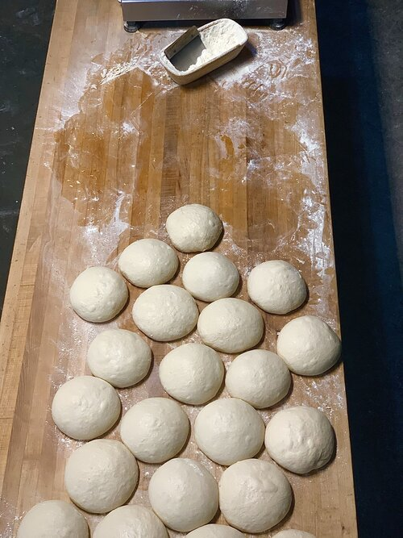
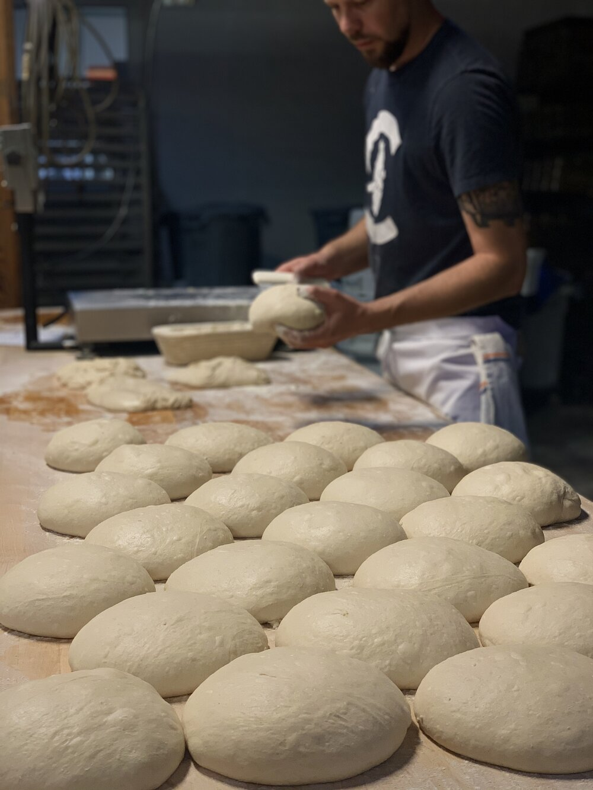
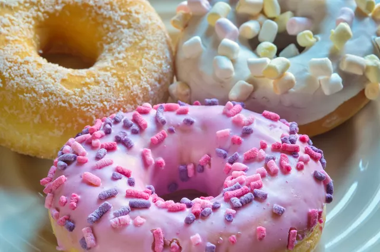
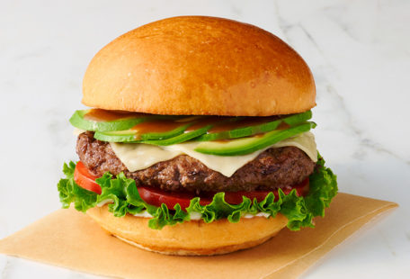
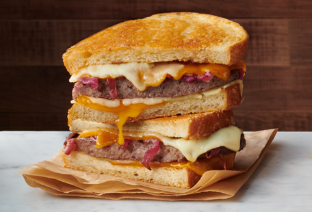

Overview
Purpose
IQweet Bakery is a committed team of talented individuals who provide superior quality baking.
Our goal is to provide all of our customers with an unparalleled product and experience. Our talented team of pastry chefs uses the purist of ingredients
and cutting edge techniques to create a product that is truly superior in quality.
We constantly provide outstanding customer service and
believe that customer satisfaction is our ultimate goal.
We are dedicated to provide our family of employees with a respectful and positive work
environment where everyone is equal.
We are always guided by our 11 points of culture everyday in everything we do.
Audience
The bakery will appeal to people of all ages. Whether you are a working class person, a business executive, a teacher, or a student, there will always be a need for you to enjoy our bakery's products. Customers under the age of 18 can order pastries from our bakery, while families can stop by for bread and rolls. High-income households may place orders for cakes for birthdays and other special occasions. We provide more bread and rolls, as well as pastries on request, to trade customers like retail outlets and online food specialists who want to sell our products. Members of the public could contact our bakery's customer service line or purchase from your mobile app. Many of these people may be residents looking for breakfast or lunch.
Branding
Website Logo

Style Guide
Color Palette
Palette URL: https://coolors.co/ff911a-ffff66-ff00ff-00ffff| Primary | Secondary | Accent 1 | Accent 2 |
|---|---|---|---|
| [#FF911A] | [#FFFF66] | [#FF00FF] | [#00FFFF] |
Typography
Heading Font: IM Fell French Canon SC
Paragraph Font: Helvetica
Normal paragraph example
For occasional news, tasty treats and random acts of kindness (such as 10% off your first order). We promise not to be bothersome.
Colored paragraph example
We are inspired by the time-honoured craft and magic of baking. It takes us to a place of childhood joy. The stuff of IQweet Bakery stories familiar, warm and wonderful. We love working with high-quality ingredients from the earth. We love the craft. We love our community.We also do not think premium-quality bakery products should cost the earth. That is why we are doing everything we can to minimise our environmental impact, from our packaging to our processes.
Navigation
Site Map
Content
Home page
Building a strong reputation is essential to a bakery's objective of attracting a loyal clientele and generating a consistent sales volume. Build your reputation by producing high-quality products and maintaining excellent customer service. Although it is tempting to sell product that are less than perfect to minimize waste, these sales may cost more in the long run by compromising your bakery's reputation. Develop a specialty, and practice until you are an expert. Build your reputation through social media, community events and local promotional opportunities. Creativity and positive customer interactions/reviews will boost business in the long run
Images for the Home page
 Products
Donut shops have excellent margins, because the pastry sells as a standalone product. So making money in the donut business is entirely possible. Creative recipes, marketing and a low overhead business model can drive revenue in this business. Many donut shops are successful and profitable in the U.S. Look to prolific donut-focused chains like Dunkin' Donuts and Krispy Creme for further confirmation that profit potential exists in the donut business.
Images for the Page 2
 Stories
Competition has a major influence on your ability to succeed at selling donuts. Location-dependent shops must focus on high traffic areas with great exposure. Select areas that are not near major chain stores to grab the maximum amount of market share in a locale. Selling creative donuts that combine unique flavors like bacon and maple can distinguish a business through higher quality products. Mobile businesses and delivery models can expand into a larger area and increase the profit potential. Office delivery and event catering are both effective sales strategies.
Images for the Page 3
Wireframes
Create three wireframes for your site. One for each page and list them here
Home
Most everyone has experienced the pleasant sensation of walking into a bakery and smelling the sweet aroma of fresh-baked goods right out of the oven. In an age where prepackaged and frozen foods dominate the retail grocery industry, bakeries provide a refreshing alternative and wide variety of delicious treats.
Products
Breads
Bakeries produce a wide variety of breads including rye, Italian and pumpernickel. Breads are one of the oldest forms of food in the world and are made by baking dough, a flour and water mixture. Other ingredients such as salt, fat, milk, sugar, baking soda and yeast can be added. Breads come in a variety of forms, including rolls and loaves. Other common ingredients in bread include nuts, seeds and vegetables.
Doughnuts
Doughnuts provide a tasty snack and can be eaten for breakfast. Usually sweet and deep fried, doughnuts come with a hole in the middle or as a solid piece filled with items such as jelly, creams or custards. Doughnuts can be baked in an oven instead of deep fried. Common doughnut toppings include powdered sugar, glaze and caramel. The two main types of doughnuts include yeast and cake. Yeast doughnuts are lighter and fluffier. Cake doughnuts tend to be heavier. The majority of doughnuts have a round shape.
Bagels
Bagels, popular breakfast items, are usually made of yeast wheat dough and come in the form of a ring. Bagels have a thick and tough exterior that is crisp and often browned. Common bagel toppings include poppy and sesame seeds. Most bakeries carry bagels, although bagel shops specialize in bagels only.
Pies
Bakeries sell pies as dessert items. A pie is a baked dish consisting of layers of pastry dough that form a shell and have sweet or sour fillings. Pies can also be filled with meat and eaten as a dinner, however such pies are rarely found in bakeries. Some traditional varieties of pies sold in bakeries include apple, strawberry, blackberry, cherry, cream, custard, key lime and lemon meringue.
Pastries
Pastries refer to baked goods made with ingredients that often include butter, sugar, shortening, flour, baking powder and eggs. Pastries, higher in fat content than breads, include small desserts and quiches. Other types include Danish pastry and croissants.

Stories
It’s Only Childish When Someone Else Is Doing It
Two customers approach my counter; one gets to me seconds before the other. The one coming in last huffs but accepts her position in the queue.
Customer #1: “I’d like that last piece of London cheesecake, please.”
Immediately, [Customer #2] interjects.
Customer #2: “No! I wanted that! Don’t give it to her!”
Customer #1: “Uh… no, I was here first. Sorry, but I want it.”
Customer #2: *To me* “No! I want that! I am the customer, and I am telling you not to give it to her!’
Me: “Sorry, madam, but she is a customer, too, and I am serving her first. I’m sorry, but we’re now out of that item.”
Customer #2: “No!”
She literally stomps her foot.
Customer #2: “That’s not fair! We both came in together!”
Customer #1: “But I got here first, so I get served first.”
Customer #2: “Why can’t you just let me have it?”
Customer #1: “Because I want it?”
Customer #2: *To me* “You need to kick them out!”
Me: “I can’t do that, madam.”
Customer #2: “But they’re behaving like a child!”
Me: “Excuse me, madam, but you’re the one stomping your foot because you didn’t get to go first.”
She actually stomped her foot again and made a noise halfway between a scream and a whimper. My years of working in customer service have taught me that this is the “I always get my way, so when I don’t, I can’t process it” noise. With that, she stormed out.